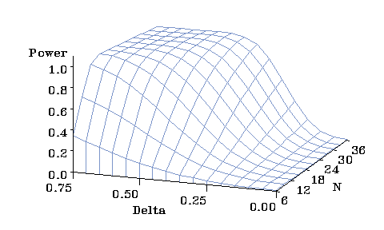

| Calculation time | 0.072 |
| Simulation time | 32.774 |
| Max deviation from SAS | 0.00000090 |
| Max deviation from simulation | 0.01038172 |
| Calc Power | SAS Power (deviation) | Sim Power (deviation) | Test | SigmaScale | BetaScale | Total N | Alpha | PowerMethod | Quantile |
|---|---|---|---|---|---|---|---|---|---|
| 0.010 | 0.010 (0.000) | 0.010 (0.000) | UNIREP | 1.000 | 0.000 | 6 | 0.010 | CONDITIONAL_POWER | 0.5 |
| 0.010 | 0.010 (0.000) | 0.010 (0.000) | UNIREP | 1.000 | 0.000 | 12 | 0.010 | CONDITIONAL_POWER | 0.5 |
| 0.010 | 0.010 (0.000) | 0.009 (0.001) | UNIREP | 1.000 | 0.000 | 18 | 0.010 | CONDITIONAL_POWER | 0.5 |
| 0.010 | 0.010 (0.000) | 0.010 (0.000) | UNIREP | 1.000 | 0.000 | 24 | 0.010 | CONDITIONAL_POWER | 0.5 |
| 0.010 | 0.010 (0.000) | 0.010 (0.000) | UNIREP | 1.000 | 0.000 | 30 | 0.010 | CONDITIONAL_POWER | 0.5 |
| 0.010 | 0.010 (0.000) | 0.009 (0.001) | UNIREP | 1.000 | 0.000 | 36 | 0.010 | CONDITIONAL_POWER | 0.5 |
| 0.011 | 0.011 (0.000) | 0.012 (0.001) | UNIREP | 1.000 | 0.050 | 6 | 0.010 | CONDITIONAL_POWER | 0.5 |
| 0.013 | 0.013 (0.000) | 0.013 (0.000) | UNIREP | 1.000 | 0.050 | 12 | 0.010 | CONDITIONAL_POWER | 0.5 |
| 0.015 | 0.015 (0.000) | 0.013 (0.002) | UNIREP | 1.000 | 0.050 | 18 | 0.010 | CONDITIONAL_POWER | 0.5 |
| 0.017 | 0.017 (0.000) | 0.016 (0.002) | UNIREP | 1.000 | 0.050 | 24 | 0.010 | CONDITIONAL_POWER | 0.5 |
| 0.020 | 0.020 (0.000) | 0.018 (0.002) | UNIREP | 1.000 | 0.050 | 30 | 0.010 | CONDITIONAL_POWER | 0.5 |
| 0.022 | 0.022 (0.000) | 0.024 (0.002) | UNIREP | 1.000 | 0.050 | 36 | 0.010 | CONDITIONAL_POWER | 0.5 |
| 0.014 | 0.014 (0.000) | 0.013 (0.001) | UNIREP | 1.000 | 0.100 | 6 | 0.010 | CONDITIONAL_POWER | 0.5 |
| 0.023 | 0.023 (0.000) | 0.022 (0.001) | UNIREP | 1.000 | 0.100 | 12 | 0.010 | CONDITIONAL_POWER | 0.5 |
| 0.033 | 0.033 (0.000) | 0.029 (0.004) | UNIREP | 1.000 | 0.100 | 18 | 0.010 | CONDITIONAL_POWER | 0.5 |
| 0.044 | 0.044 (0.000) | 0.041 (0.003) | UNIREP | 1.000 | 0.100 | 24 | 0.010 | CONDITIONAL_POWER | 0.5 |
| 0.057 | 0.057 (0.000) | 0.053 (0.003) | UNIREP | 1.000 | 0.100 | 30 | 0.010 | CONDITIONAL_POWER | 0.5 |
| 0.070 | 0.070 (0.000) | 0.070 (0.001) | UNIREP | 1.000 | 0.100 | 36 | 0.010 | CONDITIONAL_POWER | 0.5 |
| 0.019 | 0.019 (0.000) | 0.019 (0.000) | UNIREP | 1.000 | 0.150 | 6 | 0.010 | CONDITIONAL_POWER | 0.5 |
| 0.042 | 0.042 (0.000) | 0.042 (0.000) | UNIREP | 1.000 | 0.150 | 12 | 0.010 | CONDITIONAL_POWER | 0.5 |
| 0.070 | 0.070 (0.000) | 0.068 (0.002) | UNIREP | 1.000 | 0.150 | 18 | 0.010 | CONDITIONAL_POWER | 0.5 |
| 0.102 | 0.102 (0.000) | 0.098 (0.004) | UNIREP | 1.000 | 0.150 | 24 | 0.010 | CONDITIONAL_POWER | 0.5 |
| 0.137 | 0.137 (0.000) | 0.135 (0.003) | UNIREP | 1.000 | 0.150 | 30 | 0.010 | CONDITIONAL_POWER | 0.5 |
| 0.175 | 0.175 (0.000) | 0.175 (0.001) | UNIREP | 1.000 | 0.150 | 36 | 0.010 | CONDITIONAL_POWER | 0.5 |
| 0.027 | 0.027 (0.000) | 0.026 (0.001) | UNIREP | 1.000 | 0.200 | 6 | 0.010 | CONDITIONAL_POWER | 0.5 |
| 0.073 | 0.073 (0.000) | 0.075 (0.002) | UNIREP | 1.000 | 0.200 | 12 | 0.010 | CONDITIONAL_POWER | 0.5 |
| 0.133 | 0.133 (0.000) | 0.130 (0.003) | UNIREP | 1.000 | 0.200 | 18 | 0.010 | CONDITIONAL_POWER | 0.5 |
| 0.202 | 0.202 (0.000) | 0.198 (0.003) | UNIREP | 1.000 | 0.200 | 24 | 0.010 | CONDITIONAL_POWER | 0.5 |
| 0.275 | 0.275 (0.000) | 0.277 (0.002) | UNIREP | 1.000 | 0.200 | 30 | 0.010 | CONDITIONAL_POWER | 0.5 |
| 0.350 | 0.350 (0.000) | 0.353 (0.004) | UNIREP | 1.000 | 0.200 | 36 | 0.010 | CONDITIONAL_POWER | 0.5 |
| 0.037 | 0.037 (0.000) | 0.036 (0.001) | UNIREP | 1.000 | 0.250 | 6 | 0.010 | CONDITIONAL_POWER | 0.5 |
| 0.120 | 0.120 (0.000) | 0.122 (0.002) | UNIREP | 1.000 | 0.250 | 12 | 0.010 | CONDITIONAL_POWER | 0.5 |
| 0.227 | 0.227 (0.000) | 0.223 (0.004) | UNIREP | 1.000 | 0.250 | 18 | 0.010 | CONDITIONAL_POWER | 0.5 |
| 0.344 | 0.344 (0.000) | 0.346 (0.002) | UNIREP | 1.000 | 0.250 | 24 | 0.010 | CONDITIONAL_POWER | 0.5 |
| 0.458 | 0.458 (0.000) | 0.458 (0.000) | UNIREP | 1.000 | 0.250 | 30 | 0.010 | CONDITIONAL_POWER | 0.5 |
| 0.564 | 0.564 (0.000) | 0.574 (0.010) | UNIREP | 1.000 | 0.250 | 36 | 0.010 | CONDITIONAL_POWER | 0.5 |
| 0.050 | 0.050 (0.000) | 0.048 (0.002) | UNIREP | 1.000 | 0.300 | 6 | 0.010 | CONDITIONAL_POWER | 0.5 |
| 0.184 | 0.184 (0.000) | 0.187 (0.003) | UNIREP | 1.000 | 0.300 | 12 | 0.010 | CONDITIONAL_POWER | 0.5 |
| 0.350 | 0.350 (0.000) | 0.346 (0.004) | UNIREP | 1.000 | 0.300 | 18 | 0.010 | CONDITIONAL_POWER | 0.5 |
| 0.512 | 0.512 (0.000) | 0.515 (0.003) | UNIREP | 1.000 | 0.300 | 24 | 0.010 | CONDITIONAL_POWER | 0.5 |
| 0.651 | 0.651 (0.000) | 0.650 (0.000) | UNIREP | 1.000 | 0.300 | 30 | 0.010 | CONDITIONAL_POWER | 0.5 |
| 0.760 | 0.760 (0.000) | 0.764 (0.004) | UNIREP | 1.000 | 0.300 | 36 | 0.010 | CONDITIONAL_POWER | 0.5 |
| 0.068 | 0.068 (0.000) | 0.065 (0.002) | UNIREP | 1.000 | 0.350 | 6 | 0.010 | CONDITIONAL_POWER | 0.5 |
| 0.267 | 0.267 (0.000) | 0.272 (0.005) | UNIREP | 1.000 | 0.350 | 12 | 0.010 | CONDITIONAL_POWER | 0.5 |
| 0.491 | 0.491 (0.000) | 0.489 (0.002) | UNIREP | 1.000 | 0.350 | 18 | 0.010 | CONDITIONAL_POWER | 0.5 |
| 0.678 | 0.678 (0.000) | 0.675 (0.003) | UNIREP | 1.000 | 0.350 | 24 | 0.010 | CONDITIONAL_POWER | 0.5 |
| 0.810 | 0.810 (0.000) | 0.809 (0.001) | UNIREP | 1.000 | 0.350 | 30 | 0.010 | CONDITIONAL_POWER | 0.5 |
| 0.895 | 0.895 (0.000) | 0.896 (0.001) | UNIREP | 1.000 | 0.350 | 36 | 0.010 | CONDITIONAL_POWER | 0.5 |
| 0.089 | 0.089 (0.000) | 0.086 (0.003) | UNIREP | 1.000 | 0.400 | 6 | 0.010 | CONDITIONAL_POWER | 0.5 |
| 0.363 | 0.363 (0.000) | 0.369 (0.005) | UNIREP | 1.000 | 0.400 | 12 | 0.010 | CONDITIONAL_POWER | 0.5 |
| 0.633 | 0.633 (0.000) | 0.630 (0.003) | UNIREP | 1.000 | 0.400 | 18 | 0.010 | CONDITIONAL_POWER | 0.5 |
| 0.814 | 0.814 (0.000) | 0.809 (0.005) | UNIREP | 1.000 | 0.400 | 24 | 0.010 | CONDITIONAL_POWER | 0.5 |
| 0.915 | 0.915 (0.000) | 0.916 (0.001) | UNIREP | 1.000 | 0.400 | 30 | 0.010 | CONDITIONAL_POWER | 0.5 |
| 0.964 | 0.964 (0.000) | 0.965 (0.001) | UNIREP | 1.000 | 0.400 | 36 | 0.010 | CONDITIONAL_POWER | 0.5 |
| 0.114 | 0.114 (0.000) | 0.110 (0.004) | UNIREP | 1.000 | 0.450 | 6 | 0.010 | CONDITIONAL_POWER | 0.5 |
| 0.470 | 0.470 (0.000) | 0.477 (0.008) | UNIREP | 1.000 | 0.450 | 12 | 0.010 | CONDITIONAL_POWER | 0.5 |
| 0.758 | 0.758 (0.000) | 0.756 (0.002) | UNIREP | 1.000 | 0.450 | 18 | 0.010 | CONDITIONAL_POWER | 0.5 |
| 0.907 | 0.907 (0.000) | 0.903 (0.004) | UNIREP | 1.000 | 0.450 | 24 | 0.010 | CONDITIONAL_POWER | 0.5 |
| 0.969 | 0.969 (0.000) | 0.967 (0.002) | UNIREP | 1.000 | 0.450 | 30 | 0.010 | CONDITIONAL_POWER | 0.5 |
| 0.990 | 0.990 (0.000) | 0.991 (0.001) | UNIREP | 1.000 | 0.450 | 36 | 0.010 | CONDITIONAL_POWER | 0.5 |
| 0.143 | 0.143 (0.000) | 0.139 (0.004) | UNIREP | 1.000 | 0.500 | 6 | 0.010 | CONDITIONAL_POWER | 0.5 |
| 0.578 | 0.578 (0.000) | 0.580 (0.003) | UNIREP | 1.000 | 0.500 | 12 | 0.010 | CONDITIONAL_POWER | 0.5 |
| 0.856 | 0.856 (0.000) | 0.856 (0.000) | UNIREP | 1.000 | 0.500 | 18 | 0.010 | CONDITIONAL_POWER | 0.5 |
| 0.960 | 0.960 (0.000) | 0.960 (0.001) | UNIREP | 1.000 | 0.500 | 24 | 0.010 | CONDITIONAL_POWER | 0.5 |
| 0.991 | 0.991 (0.000) | 0.990 (0.001) | UNIREP | 1.000 | 0.500 | 30 | 0.010 | CONDITIONAL_POWER | 0.5 |
| 0.998 | 0.998 (0.000) | 0.999 (0.001) | UNIREP | 1.000 | 0.500 | 36 | 0.010 | CONDITIONAL_POWER | 0.5 |
| 0.176 | 0.176 (0.000) | 0.173 (0.003) | UNIREP | 1.000 | 0.550 | 6 | 0.010 | CONDITIONAL_POWER | 0.5 |
| 0.680 | 0.680 (0.000) | 0.680 (0.000) | UNIREP | 1.000 | 0.550 | 12 | 0.010 | CONDITIONAL_POWER | 0.5 |
| 0.922 | 0.922 (0.000) | 0.921 (0.001) | UNIREP | 1.000 | 0.550 | 18 | 0.010 | CONDITIONAL_POWER | 0.5 |
| 0.986 | 0.986 (0.000) | 0.985 (0.001) | UNIREP | 1.000 | 0.550 | 24 | 0.010 | CONDITIONAL_POWER | 0.5 |
| 0.998 | 0.998 (0.000) | 0.997 (0.001) | UNIREP | 1.000 | 0.550 | 30 | 0.010 | CONDITIONAL_POWER | 0.5 |
| 1.000 | 1.000 (0.000) | 1.000 (0.000) | UNIREP | 1.000 | 0.550 | 36 | 0.010 | CONDITIONAL_POWER | 0.5 |
| 0.214 | 0.214 (0.000) | 0.209 (0.005) | UNIREP | 1.000 | 0.600 | 6 | 0.010 | CONDITIONAL_POWER | 0.5 |
| 0.769 | 0.769 (0.000) | 0.770 (0.001) | UNIREP | 1.000 | 0.600 | 12 | 0.010 | CONDITIONAL_POWER | 0.5 |
| 0.962 | 0.962 (0.000) | 0.962 (0.000) | UNIREP | 1.000 | 0.600 | 18 | 0.010 | CONDITIONAL_POWER | 0.5 |
| 0.996 | 0.996 (0.000) | 0.995 (0.000) | UNIREP | 1.000 | 0.600 | 24 | 0.010 | CONDITIONAL_POWER | 0.5 |
| 1.000 | 1.000 (0.000) | 1.000 (0.000) | UNIREP | 1.000 | 0.600 | 30 | 0.010 | CONDITIONAL_POWER | 0.5 |
| 1.000 | 1.000 (0.000) | 1.000 (0.000) | UNIREP | 1.000 | 0.600 | 36 | 0.010 | CONDITIONAL_POWER | 0.5 |
| 0.255 | 0.255 (0.000) | 0.251 (0.004) | UNIREP | 1.000 | 0.650 | 6 | 0.010 | CONDITIONAL_POWER | 0.5 |
| 0.842 | 0.842 (0.000) | 0.845 (0.003) | UNIREP | 1.000 | 0.650 | 12 | 0.010 | CONDITIONAL_POWER | 0.5 |
| 0.984 | 0.984 (0.000) | 0.983 (0.000) | UNIREP | 1.000 | 0.650 | 18 | 0.010 | CONDITIONAL_POWER | 0.5 |
| 0.999 | 0.999 (0.000) | 0.999 (0.000) | UNIREP | 1.000 | 0.650 | 24 | 0.010 | CONDITIONAL_POWER | 0.5 |
| 1.000 | 1.000 (0.000) | 1.000 (0.000) | UNIREP | 1.000 | 0.650 | 30 | 0.010 | CONDITIONAL_POWER | 0.5 |
| 1.000 | 1.000 (0.000) | 1.000 (0.000) | UNIREP | 1.000 | 0.650 | 36 | 0.010 | CONDITIONAL_POWER | 0.5 |
| 0.299 | 0.299 (0.000) | 0.297 (0.003) | UNIREP | 1.000 | 0.700 | 6 | 0.010 | CONDITIONAL_POWER | 0.5 |
| 0.898 | 0.898 (0.000) | 0.899 (0.001) | UNIREP | 1.000 | 0.700 | 12 | 0.010 | CONDITIONAL_POWER | 0.5 |
| 0.994 | 0.994 (0.000) | 0.993 (0.000) | UNIREP | 1.000 | 0.700 | 18 | 0.010 | CONDITIONAL_POWER | 0.5 |
| 1.000 | 1.000 (0.000) | 1.000 (0.000) | UNIREP | 1.000 | 0.700 | 24 | 0.010 | CONDITIONAL_POWER | 0.5 |
| 1.000 | 1.000 (0.000) | 1.000 (0.000) | UNIREP | 1.000 | 0.700 | 30 | 0.010 | CONDITIONAL_POWER | 0.5 |
| 1.000 | 1.000 (0.000) | 1.000 (0.000) | UNIREP | 1.000 | 0.700 | 36 | 0.010 | CONDITIONAL_POWER | 0.5 |
